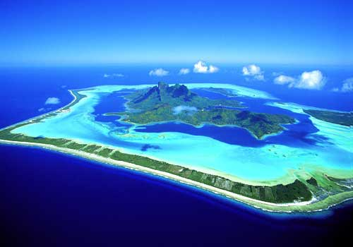
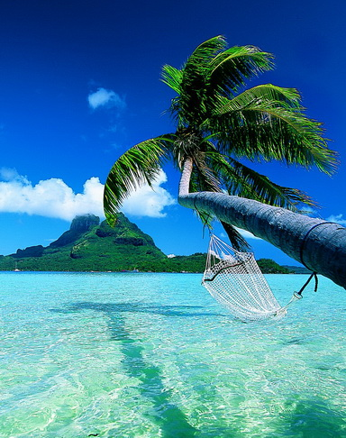

Bora Bora Island
Bora Bora is an island in the Leeward group of the Society Islands of French Polynesia, an overseas collectivity of France in the Pacific Ocean. The original name of the island in the Tahitian language might be better rendered as Pora Pora, meaning "First Born"; an early transcription found in 18th- and 19th-century accounts, is Bolabolla or Bollabolla. The island, located about 230 kilometres (140 mi) northwest of Papeete, is surrounded by a lagoon and a barrier reef. In the center of the island are the remnants of an extinct volcano rising to two peaks, Mount Pahia and Mount Otemanu, the highest point at 727 metres (2,385 ft). Bora Bora is a major international tourist destination, famous for its aqua-centric luxury resorts. The island is served by Bora Bora Airport on Motu Mete in the north, with Air Tahiti providing daily flights to and from Papeete on Tahiti. The major settlement, Vaitape is on the western side of the main island, opposite the main channel into the lagoon. Produce of the island is mostly limited to what can be obtained from the sea and the plentiful coconut trees, which were historically of economic importance for copra. According to a census performed in 2008, the permanent population of Bora Bora is 8,880.
Today the island is mainly dependent on tourism. Over the last few years several resorts have been built on motu (small islands) surrounding the lagoon. Thirty years ago, Hotel Bora Bora built the first over-the-water bungalows on stilts over the lagoon and today, over-water bungalows are a standard feature of most Bora Bora resorts. The quality of those bungalows ranges from comparably cheap, basic accommodations to very luxurious - and expensive - places to stay. Most of the tourist destinations are aquacentric; however it is possible to visit attractions on land such as WWII cannons. Air Tahiti has five or six flights daily to the Bora Bora Airport on Motu Mute from Tahiti (as well as from other islands). Although French and Tahitian are the main languages spoken by the inhabitants, people in contact with tourists generally have some command of English. Most visitors to Bora Bora are American, Japanese, or European.[citation needed] Public transport on the island is non-existent. Rental cars and bicycles are the recommended method of transport. There are also small fun-cars for hire in Vaitape. Snorkeling and scuba diving in and around the lagoon of Bora Bora are popular activities. Many species of sharks and rays inhabit the surrounding body of water. There are a few dive operators on the island offering manta ray dives and also shark-feeding dives. In addition to the existing islands of Bora Bora (called Motu in Taihitian), the new man-made motu of Motu Marfo has been added in the north-eastern corner of the lagoon on the property of the St. Regis Resort.
Source article locates here.